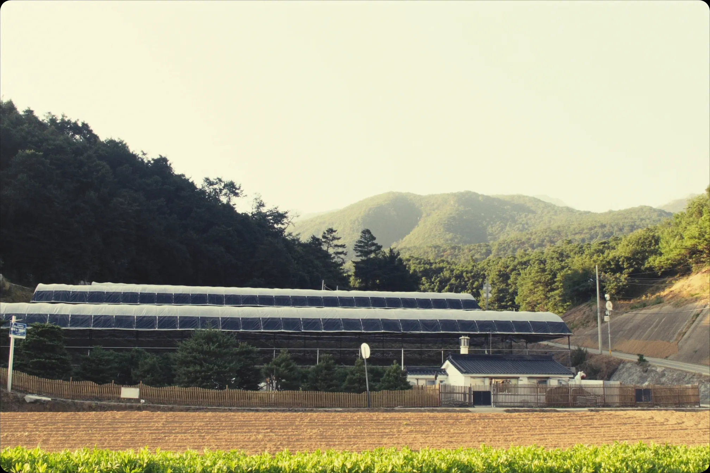
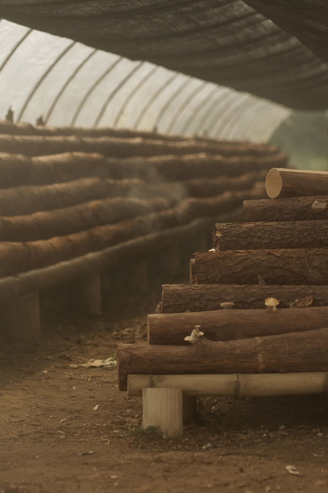

Our Story
연천, 금빛을 키우는 땅
한탄강이 흐르는 청정 재배지에서, 우리는 시간을 두려워하지 않는 농사를 짓습니다.

PHOTO · 재배지 전경
01 — Cultivation
한탄강이 내어준 땅
연천 한탄강 일대는 현무암 협곡이 만들어낸 미네랄 풍부한 토양과 깨끗한 수질을 가진 청정지역입니다. 사계절이 뚜렷한 기후 아래, 참나무 원목 위에서 황금상황버섯이 천천히 결을 쌓아갑니다.

PHOTO · 원목 자연배양
02 — Craft & Time
짧은 효율보다,
짧은 효율보다,
길게 익히는 시간
‘금빛’은 자연이 오랜 시간을 들여 내려준 황금빛 결실을 의미합니다. 농원은 빠른 길 대신 천천히 익히는 길을 택해 왔습니다. 수확한 당일 가공해 원물의 결을 최대한 지킵니다.
PHOTO · 대표/농장실사 준비 중
03 — People
땅을 닮은 사람들
금빛농원을 운영하는 한여울바이오밸리㈜는 청정 재배지의 흙과 물, 참나무 원목이 만들어내는 자연 그대로의 결을 가장 중요한 자산으로 여깁니다. 국내 유수 건강식품 기업에 원물을 공급해 온 재배 노하우를, 이제 소비자에게 직접 전합니다.
서두르지 않고, 자연의 속도로.